Mapping and Spatial Data
Latitude and Longitude
Plot the earth with geocoordinates.
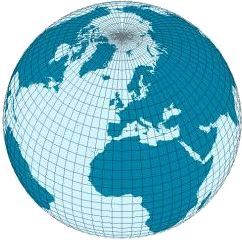
Geographic data includes geocoordinates.
Degrees, Minutes, Seconds format:
110°W 21’ 13”
Decimal Degrees format:
110.353611
(+/- for N/S or W/E)
Most mapping software uses decimal degrees!
You can always use an online conversion tool.
Longitude and Latitude tell us the locations of the data and its extent.
You need a “bounding box” to define the edges of your map.
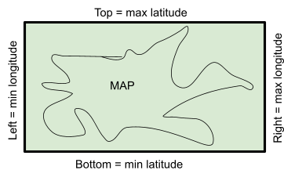
Find bbox coordinates online at bboxfinder.com.
Maps are awesome. Spatial analysis is hard.
Plotting points in space is only the first step.
Let’s get set up for mapping in RStudio.
First, install some new libraries.
# In the console, type:
install.packages("devtools")
library(devtools)
devtools::install_github("dkahle/ggmap")
install.packages("rworldmap")
install.packages("gapminder")Then import those libraries in a new RScript.
# In an R Script or RMarkdown file, type:
library(ggmap)
library(dplyr)
library(sp)
library(rworldmap)
library(gapminder)GGmap works like ggplot, and we can apply the same skills to it.
Let’s make this map together:
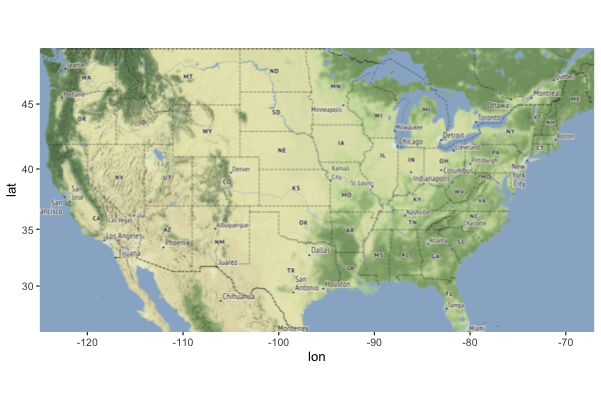
First we make a bounding box.
For the US, we can enter the bounding coordinates manually:
usbbox <- c(left = -125, bottom = 25.75, right = -67, top = 49)Then we make a “map object” for ggmap to process.
We do this using ggmap’s special get_stamenmap() function.
usmap <- get_stamenmap(usbbox, zoom = 5)Stamen is a map/geocoding service.
Then, just run ggmap!
ggmap(usmap)Now you can play around and adjust the features.
What happens if you lower the zoom value? What happens if you add a maptype to the get_stamenmap() function?
Possible maptypes: “terrain”, “terrain-background”, “terrain-labels”, “terrain-lines”, “toner”, “toner-2010”, “toner-2011”, “toner-background”, “toner-hybrid”, “toner-labels”, “toner-lines”, “toner-lite”, “watercolor”
Add Data to Maps
Let’s make a map based on crime data in Houston, TX.
ggmap comes with a crime dataset we can use.
# Let's filter the data to only violent crimes
violent_crimes <- filter(crime, offense != "auto theft", offense != "theft", offense != "burglary")
# rank violent crimes
violent_crimes$offense <- factor(violent_crimes$offense,
levels = c("robbery", "aggravated
assault", "rape", "murder"))
# restrict to downtown
violent_crimes <- filter(violent_crimes,
-95.39681 <= lon & lon <= -95.34188,
29.73631 <= lat & lat <= 29.78400)Now we can prepare our Houston bbox and map.
# Use SpatialPoints from sp library to get
# bbox from our data instead of manually.
bbox <- bbox(SpatialPoints(violent_crimes[,c("lon", "lat")]))
# Get a map based on this bbox
map <- get_stamenmap(bbox, maptype="toner-lite", zoom=13)Write a ggmap function just like ggplot.
ggmap(map, darken=0.7) +
geom_point(data=violent_crimes, aes(lon, lat), col="red")Wow! Try it with and without the darken parameter. What changes?
And look at the final product!
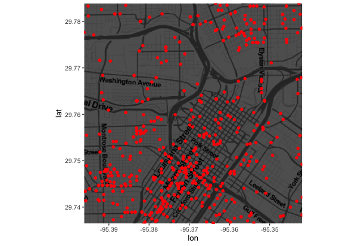
We can also facet this graph, just like ggplot.
ggmap(map, darken=0.6) +
geom_point(data= violent_crimes, aes(lon, lat, color = offense)) +
facet_wrap(~month)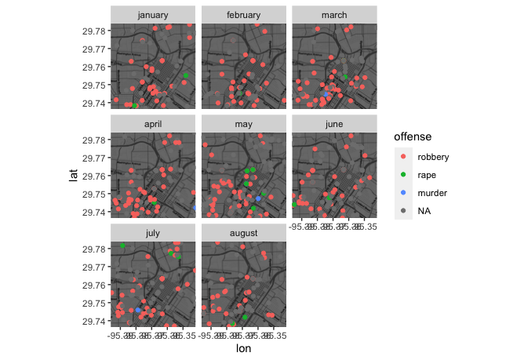
We can take the same data and make a “heat map” instead.
# Filter to only robberies
robberies <- violent_crimes %>% filter(offense == "robbery")
# Use density geometries
ggmap(map, extent="device") +
geom_density2d(data=robberies, aes(x=lon, y=lat), size=0.3) +
stat_density2d(data=robberies, aes(x=lon, y=lat, fill=..level.., alpha=..level..), size=0.01, bins=16, geom="polygon") +
scale_fill_gradient(low = "blue", high = "red") +
scale_alpha(range = c(0, 0.3), guide = "none")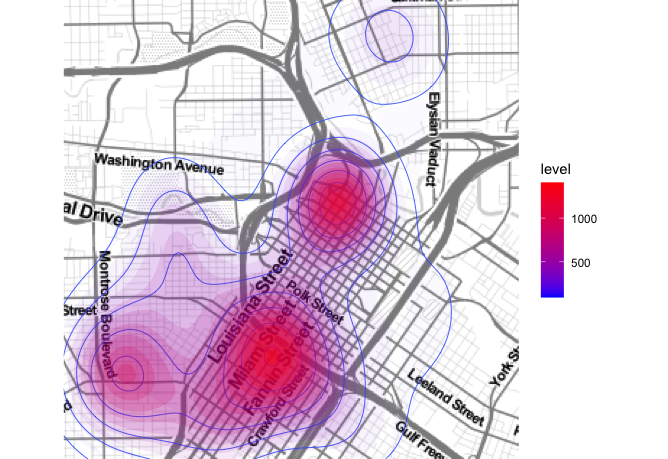
You’re ready to try on your own!
Challenge 1
Remember how the Garlic Mustard dataset had latitude and longitude variables? One thing we might need to know, in order to validate our study, is if there is geographic bias in where garlic mustard plots were.
- Find the bounding box for your data points
- Plot the garlic mustard points on our map of the US
- Color the points by a categorical variable
- Color and/or size the points by a numeric variable
- See if you can make a heat map of where the plots are concentrated.
Challenge 2
Now do the same thing for Europe! How would you get the right bounding box?
Challenge 3
Make a map of Denison University, and label a building or location on campus that you enjoy, with text that relates to why it’s special to you - or why you’re thankful for it.
# Hint: the "annotate" layer of ggmap looks like this:
annotate('text', x=-82.523211, y=40.071658, label='I teach here <3', colour=I('white'), size=4)Solution 1
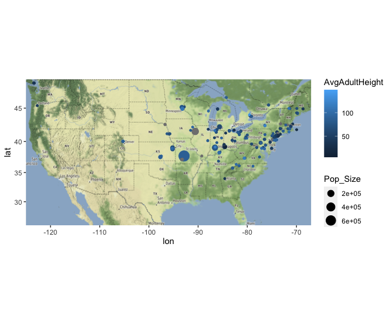
Alternative Solution 1
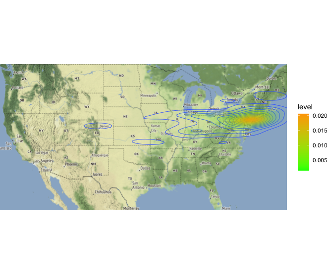
Solution 2
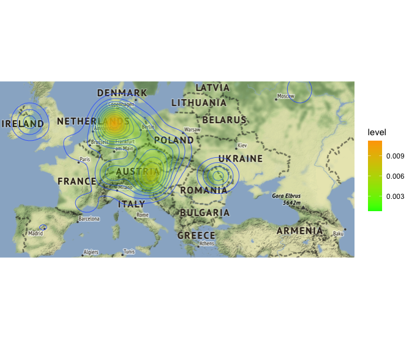
Solution 3
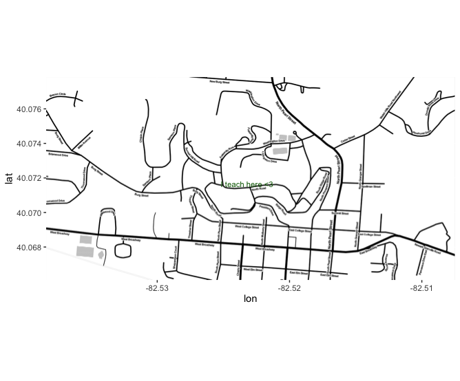
Chloropleth Maps
You see these everywhere!
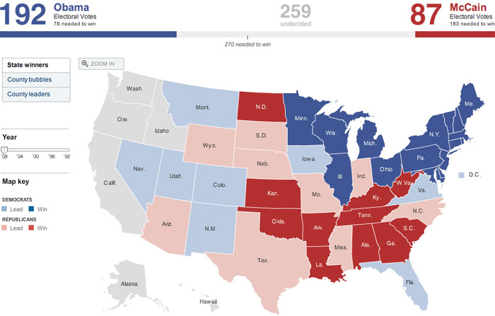
You don’t even need ggmap for this. Regular ggplot will do. Let’s make one together.
Get some global GDP data from gapminder.
# Get gapminder world economy data for 2007
gap2007=gapminder %>%
filter(year==2007) %>%
rename(region=country)Chloropleth maps are made of polygons. Let’s use rworldmap to get our polygons.
# Get world polygons
world <- map_data(map="world")
# Now we can "join" this to our gapminder data:
world2 <- left_join(world, gap2007, by="region")Finally we can write our ggplot code using geom_polygon().
# Chloropleth world GDP map
ggplot(world2, aes(long, lat, group = group))+
geom_polygon(aes(fill = gdpPercap), col="white")+
scale_fill_viridis_c(option = "C") +
theme_void()And voila!
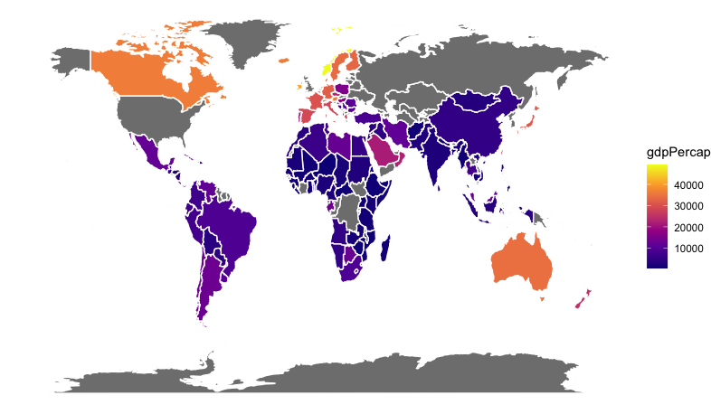
You try it!
Challenge: Make a similar map for the urban population of US states.
Here’s some code to get you started:
# Get US states polygons
states <- map_data(map="state")
# Lowercase crime data
USArrests$region = tolower(rownames(USArrests))What do you need to do next? Think about joining data before you try ggplot!
Here’s what you’re aiming for:
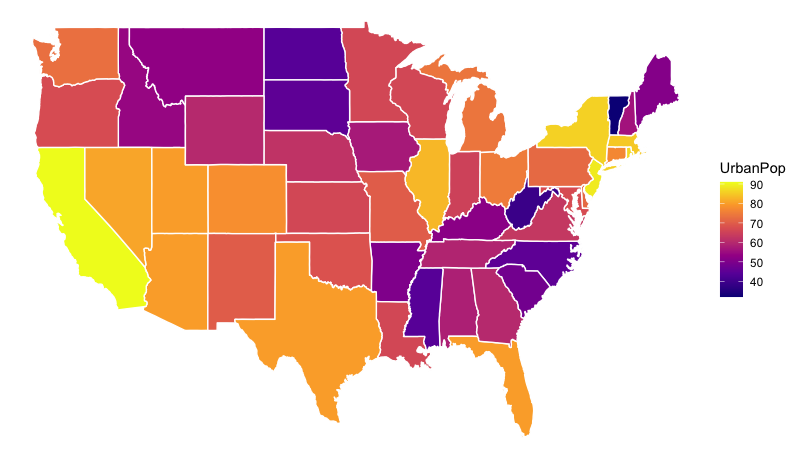